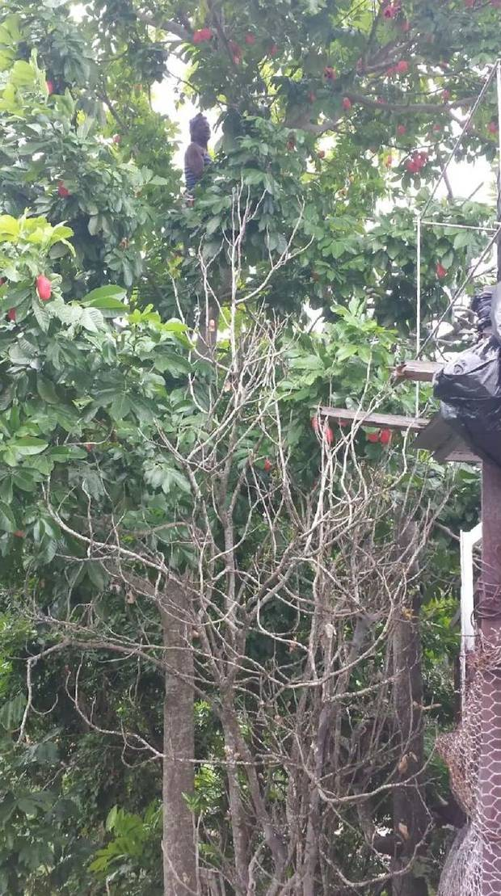

Our Roots


How to start an ital diet? Climb the ackee tree.
Ital food, ital stew, and ital recipes.
Ackee can meet essential ital food needs and carry everyday meals, alongside traditional Jamaican bush teas. It also works well in ital stew, with little need for store-bought food.
Rooted in
tradition.
Built to last.
A powerful health education movement rooted in ancestral wisdom, cultural dignity, and a profound respect for the land — and the generations who understood nourishment long before modern misconceptions took hold.
The Symbol
The family
tree logo.
Every element of the Kwik Fat Cut emblem is deliberate. The shield, the spiral trunk, the green and red leaves, the sunset behind the canopy, the deep roots reaching into the earth — each one carries meaning.
The Kwik Fat Cut family tree stands as a bold symbol of life itself. Its roots represent the fundamental elements of human vitality — fresh air, pure mineral water, sunlight, movement, nourishing foods, and restful sleep. These are not trends. These are the key rhythms the body has always needed, understood by our ancestors long before they were named by science.
This tree embodies a core principle deeply revered in Rastafarian tradition — a profound respect for the Creator, the body, the land, and ancestral heritage. It reminds us that health is about harmony, not punishment. About understanding, not shame. About growth that is steady, rooted, and unstoppable.
The roots honour indigenous foods, cultural identity, and a deep respect for the land and ancestors. They celebrate Jamaican and West Indian African culinary traditions — foods that have sustained generations long before modern misconceptions about diet took hold. These are not recipes from the past. They are living wisdom.
Like a resilient tree, true change demands time, persistence, and unwavering progress. Confidence, health, and knowledge develop gradually — and when properly rooted, they become unstoppable. This emblem signifies exactly that: strength, resilience, and steady growth.
The Roots
What the
tree stands on.
The roots of the Kwik Fat Cut tree are not abstract. They represent specific, daily, foundational elements of human vitality that traditional wisdom has always understood — and that modern life has often forgotten.
Fresh Air
Breath is the most fundamental act of life. Clean air, deep breathing, and time in natural environments are foundational to cellular health and mental clarity.
Pure Mineral Water
Water is not simply hydration. Mineral-rich water supports cellular function, digestion, and the body’s ability to absorb nutrients effectively. Quality matters.
Sunlight
Sunlight regulates sleep cycles, supports vitamin D production, and influences mood and immune function. Traditional communities understood its role in daily rhythm.
Movement
The body is designed to move — not to train for performance, but to walk, work, stretch, and engage with the physical world as part of everyday life.
Nourishing Foods
Whole foods, ancestral recipes, food grown from the earth and prepared with care. These are not restrictions — they are the original language of nourishment.
Restful Sleep
Sleep is when the body repairs itself — not idle time, but essential work. Understanding your body’s rest cycle is part of understanding your health.
The Colours
Black. Red. Gold. Green.
Each colour carries weight.
Centred in the Kwik Fat Cut logo are four colours, each carrying profound cultural significance. Together they honour the resilience, endurance, and creativity of African and Caribbean cultures — especially within Jamaica’s Rastafarian communities.
Ancestral Wisdom
Reconnecting
communities with their food.
Many modern food systems have distanced communities from their traditional foods. Kwik Fat Cut is committed to reversing that — not with nostalgia, but with knowledge, dignity, and practical understanding.
Jamaican & West Indian tradition
Ground provisions, ackee, callaloo, breadfruit, plantain, legumes, and herbs — these foods sustained generations and carry nutrients that modern processed alternatives cannot replicate. They are not old-fashioned. They are precise.
African culinary heritage
West African foodways — built on whole grains, leafy greens, legumes, fermented foods, and natural fats — are among the most nutritionally sophisticated on earth. They were not improved by industrialisation. They were diminished by it.
Foods grown from the earth
The Kwik Fat Cut commitment is to reconnect people with food that comes from the ground, prepared with care, shared with dignity — not as a diet plan, but as a way of understanding what the body was always designed to receive.
The next generation
Kwik Fat Cut is a living archive — a space where the next generation can rediscover what their ancestors already understood. Where tradition and science unite, and where that knowledge is shared freely, without shame.
These foods were made to nourish. They still do.
A Promise
“More than a food education platform — Kwik Fat Cut is a living archive of ancestral knowledge, cultural dignity, and practical health wisdom.”
A space to learn without shame. Where tradition and science unite. Where the next generation can rediscover what their ancestors already understood. We are what we eat.
An education-first movement rooted in roots and resilience. No judgment. No body-shaming. We keep moving forward. We row together. You steer. You lead the way.
Kwik Fat Cut
culinary peace.Education Before Intervention — We row. You steer.
Start wherever
you are.
No conditions. No pressure. No body shaming. Just begin.